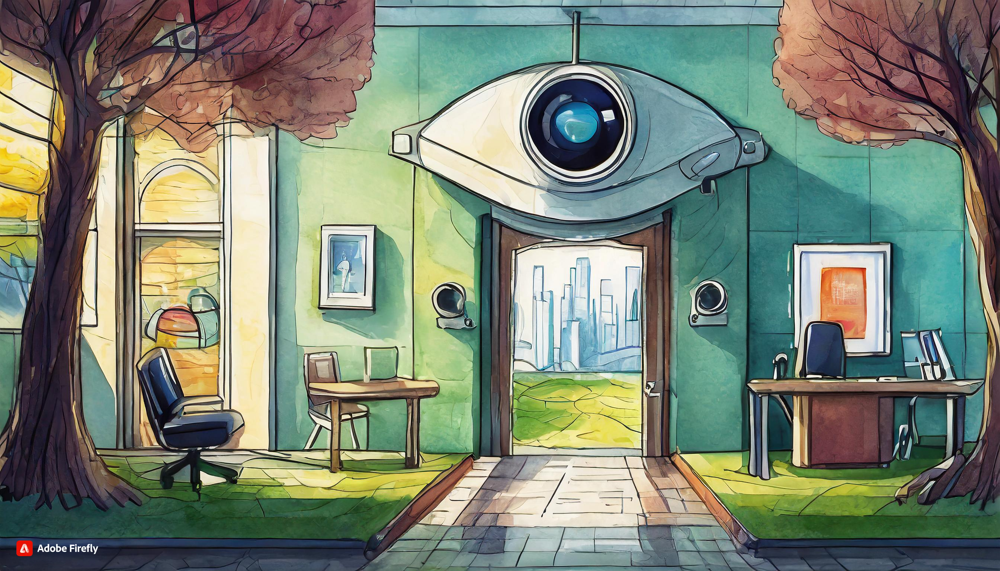

Página Principal
Sobre a clínica
Horário de Atendimento
Contato

Localizado estrategicamente no coração de uma área comercial movimentada, o consultório oftalmológico oferece conveniência e acessibilidade aos pacientes, estando em proximidade com uma variedade de comércios locais. Esta localização privilegiada permite que os pacientes combinem facilmente suas visitas ao consultório com outras atividades comerciais, economizando tempo e esforço.
Além da conveniência geográfica, o consultório se destaca pela qualidade excepcional de seu atendimento. Contando com uma equipe médica altamente qualificada e experiente, o consultório prioriza o cuidado individualizado e personalizado de cada paciente. Desde o momento em que os pacientes entram, são recebidos com uma calorosa e acolhedora equipe de recepção, que se esforça para garantir uma experiência agradável e sem complicações.
A qualidade do atendimento oftalmológico é evidente em cada etapa do processo, desde o agendamento da consulta até o acompanhamento pós-tratamento.